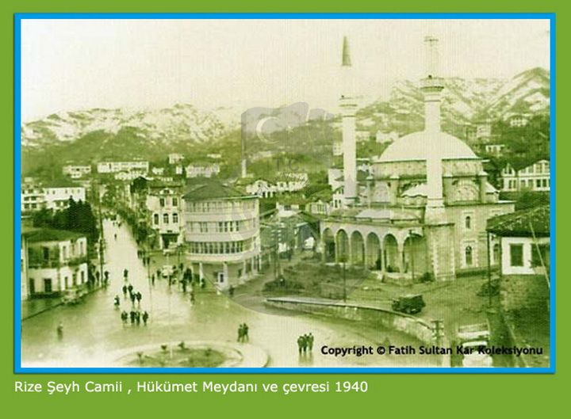
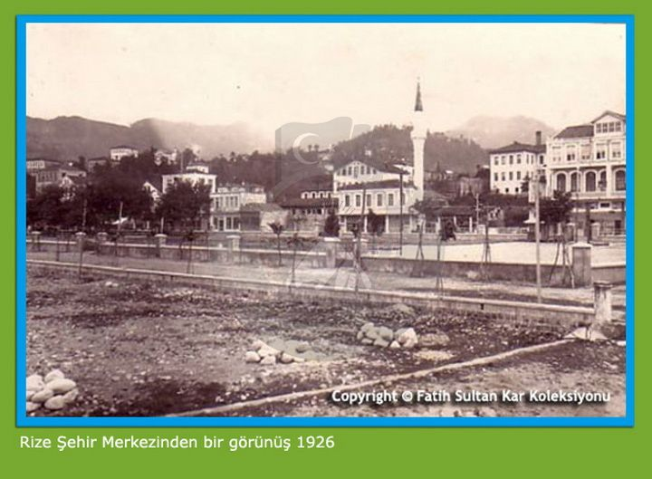

Rize'nin tarihi öncesi hakkında bilgilerimiz sınırlıdır. Yöreye hakim olan orman dokusu nedeniyle, Rize'nin tarih çağları ile ilgili bilgilere ışık tutacak arkeolojik bulgular da bu güne kadar ortaya çıkarılamamıştır. Rize'nin tarihi ancak komşu illerin ve bölgelerin tarihleri ile bağlantılı olarak ele alınabilmiştir. Rize ilinin adı ile ilgili olarak değişik görüşler ileri sürülmüştür; Yunanca pirinç anlamına gelen Rhisos, Rumca'da "RIZA" olarak dağ eteği anlamında kullanılmıştır. Osmanlıca'da ise "RİZE" ufak kırıntı, döküntü anlamındadır. Ayrıca Erzincan'ın Sakalar dönemindeki "Eriza" olan adının başındaki "e" sesinin düşmesi ile adaş olarak Rize için de kullanıldığı ifade edilmektedir.
2-İlk tarihi izlerRize ili ve çevresinin bilinen ilk hakim ahalisi, bitişken dilli ve Asya kökenli kavimlerdir. Bunlar Rize ve çevresinde tarım ve hayvancılıkla geçinen yerleşik topluluklarıdır. Bu topluluklardan "KULKU-KULKHA"ların adına, Erzurum yöresini kendi ülkesinin topraklarına katan URARTU kralı II. SARDUR (M.Ö. 765-735) 'un Çıldır gölünün güneyinde Taşköprü köyünün üstündeki kayalıklara kazdırdığı çivi yazılı kitabede rastlanmıştır. M.Ö. 2000'lerde Kafkas dağları ile Karadeniz'in kuzeyinde yaşayan Kimmerler'in Ülkesi, M.Ö. 720 yıllarında Sakalar tarafından işgal edildi. Kimmerler'in Azak denizi ile Kafkaslar arasında yaşayan kolu, Sakalar'ın baskısı ile M.Ö. 714 yıllarında yurtlarını bırakarak Aras ve Çoruh nehri boylarınca yayıldılar. Kimmerler'in bu ilk göçleri, en eski destani Gürcistan tarihi olan "Kartlis-Çkhovrebe"da kartli (Gürcistan) ve komşularını esarete aldıkları ilk seferi diye anılmaktadır. Daha sonraları Kızılırmak ve Adana Bölgesine kadar hakim olan Kimmerler'den, Trabzon-Bayburt arasındaki Kemer dağı, Rize Çayeli İlçesi çıkışındaki Kemer köyü, Kızılırmak boyundaki Gemerek ile Kars'ın doğusunda yer alan Ümrü gibi coğrafya adları günümüze kadar gelmiştir. Aşağı Tuna ve Karpatlara kadar Doğu Avrupa'ya hakim olan Sakalar M.Ö. 680 yılında kendilerine itaat etmeyen son Kimmerler'i de yenerek Azerbaycan ve Gürcistan'a yayıldılar. Saka Kralı MADOVA'nın M.Ö. 626'da Medler'ce hile ile öldürülmesi üzerine Heredot'un andığı "Asya'da 28 yıl süren Sakaların hakimiyetleri" sona erdi. Saka göçleri sırasında, Aşağı Çoruh ve Rize-Batum arasına "Kalaç" adlı bir Türk boyu yerleşmiştir. Bu boyun yerleştiği bölgeye, M.S. 150 yıllarında yazılan PTOLEMEUS'un coğrafyasında Kalarzen, Gürcü kaynaklarda ise Klarc-et (=Klarç yurdu) denmektedir. Batom-Rize arasında güneyden Karadeniz'e esen sıcak rüzgarlar hala "Kalaş yeli" olarak anılmaktadır. Ayrıca Rize yöresindeki Türkmen/Oğuz topluluğu içinde yer alan Askur Boyunun Rize'nin doğusundaki Askoroz çayı diye bilinen çaya adını vermiş olması gerektir. Yine Sakaların Horosan kolunun gelen Arşaklar ve Balkarlar Bayburt çevresi Çoruh vadisi boyunca yerleşmişlerdir. Bu yüzden Bayburt ve İspir'in kuzeyindeki sıra dağlara günümüze kadar ve hece kaymasıyla "Balkal" ve buradan güneye doğru esen yağmur getiren rüzgara da "Balkal yeli" denile gelmektedir. Rize'de Hemşinlilerin en güzel yaylaları Baykal dağlarındadır.
 Trabzon Rumları, 1456 yılından itibaren Osmanlı devletine vergi vermeye başlamış, 1461 yılında Trabzon'u feth eden Fatih Sultan Mehmet 1470 yılında Ali Paşa ismindeki Komutan tarafından Rize ve çevresi Türk egemenliği altına alınmıştır. Böylece Anadolu Türk birliğine katılan Rize bölgesine, 1461 yılı ve sonrasında Çoruh, Amasya, Samsun ve Tokat'tan; 1466 yılında yıkılan Karamanoğlu Beyliği bir daha canlanmasın diye Konya yöresinden; 1501 yılında Şil Şah İsmail'in yıktığı Sünni Akkoyunlulardan Tebriz ve öteki bölgelerden kaçanlardan; 1515 yılında Dulkadırli beyliği kaldırılınca Mara-Elbistan Türkmenleri Trabzon ve Rize yöresine yerleştirildiler. Yavuz Selim devrinde Trabzon'un doğusundaki dirliklerden bazıları ünlü Oğuz boyu Çepniler'in elinde idi. Fakat Çepnilerin Trabzon'un doğusundaki yerlere ve bilhassa Rize bölgesinde yerleşmeleri sonraki yüzyıllarda olmuştur. Gerçekten Çepniler karada ve denizde yiğitçe mücadele vererek oralarda kalabalık topluluklar halinde yurt tutmuşlardır. Bilhassa Rize şehri ve bölgesinde Çepniler yoğun bir şekilde yerleşmişlerdir. Şimdi Rize şehri ve bölgesinde sadece Türkçe konuşulmasının sebebi bu yoğun Çepni yerleşmesidir. Zamanımızda Rize bölgesindeki köylerde Çepni adlı ailelere rastlandığı gibi, Çepni bu yörede "yiğit" , "gözü pek", "cesur ve çetin", adam manasına geliyor. Yavuz Sultan Selim'in sancak beyliği sırasında Annesi Gülbahar Hatun Sultan Rize'ye gelerek kendi adı ile anılan camii yaptırmıştır. 19. Yüzyılın başlarından itibaren Rize'de Tuzcuoğullarının isyanı değişik tarihlerde birkaç kez tekrarlanmıştır. 1834 yılında bu isyanlara son verilerek Tuzcuoğulları Rumeli de iskan edilmişlerdir. Rize, 1867 Vilayet Nizamnamesine göre Trabzon Vilayetinin merkez sancağının 6 kazasından biri durumundadır. 1877 yılında merkez sancağa bağlı nahiye olmuştur. 1877-1878 Osmanlı Rus savaşının ardından Lazistan sancağı kurulunca Rize hem kaza, hem de bu sancağın merkezi oldu. Birinci Cihan savaşında 9 Mart 1916 tarihinde Rize, Rusların işgaline uğramış, 2 Mart 1918 de bağımsızlığına kavuşmuştur.
4-Cumhuriyet dönemiCumhuriyet dönemine kadar sancak merkezi olan Rize, 20 Nisan 1924 tarihinde Vilayet olmuştur. 2 Ocak 1936 tarihinde yürürlüğe giren 2885 sayılı Kanunla Erzurum'dan Yusufeli ilçesi, Rize'de Pazar ilçesinden sonraki arazi parseli, ilçe ve bucaklar alınmak sureti ile bugünkü Artvin ili Çoruh adı ile vilayet haline getirilmiş ve Rize ili de tek ilçesi olan Pazarla kalmıştır. Bugün ise Pazar ilçesi ile birlikte 12 ilçesi bulunmaktadır. Atatürk'ün Rize'yi ziyareti "Atatürk'ün Sonbahar Seyahatleri" adlı kitapta şöyle anlatılmaktadır: Atatürk 17 Eylül 1924'te saat 17 sıralarında Hamidiye Kravüzörü ile Rize'ye gelmiştir. Vali, kumandanlar ve halk motorlar ve kayıklarla karşılamaya çıktılar, büyük ve coşkun halk tabakaları karşılama için her türlü hazırlıkları yapmışlardı. Silah sesleri ve coşkun alkışlarla büyük misafir selamlandı. Çeşitli heyetler, karaya ayak basmış bulunan Reisi Cumhuru büyük bir coşkunlukla karşılamışlardır. Her tarafı bayraklarla donatılmış olan Rize, bir bayram yeri haline döndü, Reisicumhur hazretleri hükümet konağına ve bunu takiben belediyeye, halk fıkrası ve kumandanlığa teşrif etti. Görüşmek için gelen heyetler de kurbanlar keserek kendilerine büyük sevgi gösterilerinde bulunmuşlardır. Geceleyin fener alayları düzenlenerek bu sevinç devam ettirilmiştir. Reisicumhur, ayrıca bir hoca heyetini de kabul etmiştir. Bu heyet sunmuş oldukları dilekçede kapatılmış bulunan medreselerin açılmasını arz etmişlerdir. Gazi Paşa Hazretleri, memleket ve millet için nelerin tehlikeli olacağını ihtar ederek bu heyete özet olarak aşağıdaki sözleri söylemiştir.: "Mektep istemiyorsunuz, halbuki millet onu istiyor, bırakınız artık bu zavallı millet, bu evladı memleket yetişsin, medreseler açılmayacaktır, millete mektep lazımdır." Gazinin bu açıklamaları "Bravo" sesleri ile alkışlanmıştır. 17 Eylül 1924 tarihinde Atatürk'ün Rize'ye teşrif ettiklerinde misafir kaldığı ev bu gün Atatürk Müzesi olarak halkın ziyaretine açıktır.